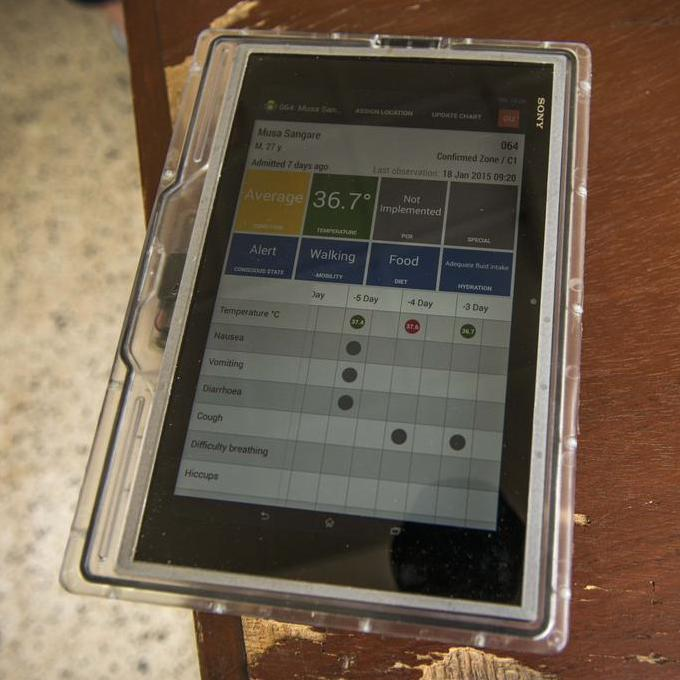

How we began, amidst the biggest Ebola outbreak in history
In September 2014, at the height of the Ebola crisis, a group of tech volunteers came together to see how they could use their skills to help Médecins Sans Frontières address this devastating epidemic.
A team of engineers from Google’s Crisis Response team and other volunteers responded, creating the first open-source electronic medical records system uniquely designed for these harsh conditions: no internet, unreliable power, sweltering temperatures and the strictest of biohazard safety procedures.
Please see GitHub for all project documentation and source code.

Server unit: runs on batteries that last for a week.
Built on OpenMRS; automatic backup to USB stick. No Internet needed. Minimal administration. |

Tablet: fully immersible in 0.5% chlorine.
Wireless charging. Sturdy casing with hand grips for portrait or landscape mode. |
|
User interface: large text and touch targets; clear layout;
emphasis on critical data for patient care decisions. Easy navigation; quick data entry and editing; data syncs across server and all tablets within minutes. |
|